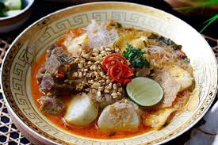

Soto ayam khas Sumenep berbeda dengan soto ayam lainnya,
karena soto ayam Sumenep, mengkombinasikan baik bahan,
bumbu dan pelengakap lainnya, gurihnya lagi bila dicampur sambel pedas
dengan kecap ditambah krupuk poli khas daerah

Soto Campor Sumenep
Soto Campor Sumenep
Makanan Tradisional
Campor merupakan makanan khas Kabupaten Sumenep, Jawa Timur. Makanan
ini sekilas mirip dengan soto. Bedanya, soto umumnya berkuah bening
dengan potongan babat dan daging sapi, sedangkan campor memiliki
kuah merah kental.